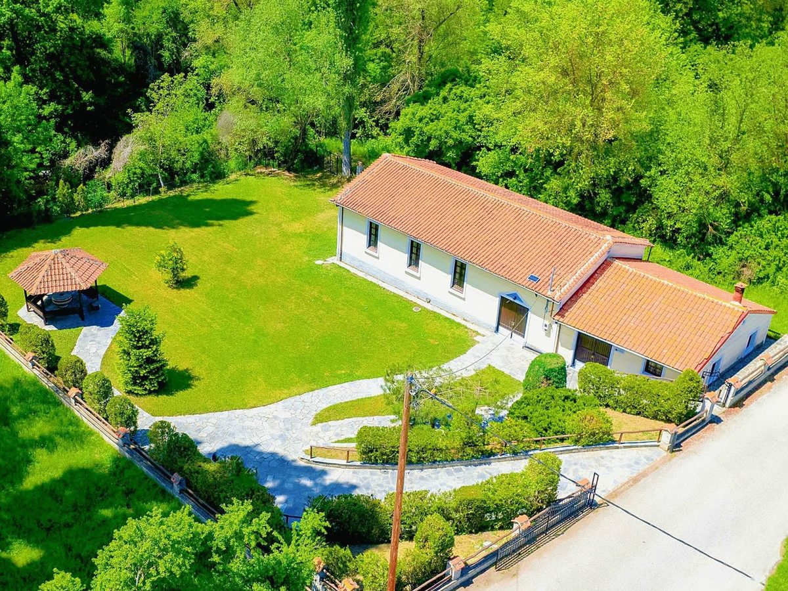
01 · ΚτίριοΟ Μύλος
Η καρδιά του χώρου: αληθινή πέτρα, παλιός ξύλινος σκελετός και θερμός φωτισμός. Μαγική ατμόσφαιρα για το γιορτινό τραπέζι — και εσωτερικός χώρος που έχει μείνει αναλλοίωτος στον χρόνο.
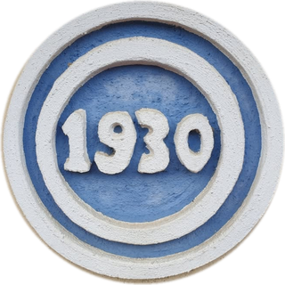
ΜΥΛΟΣ ΓΕΩΡΓΙΑΔΗ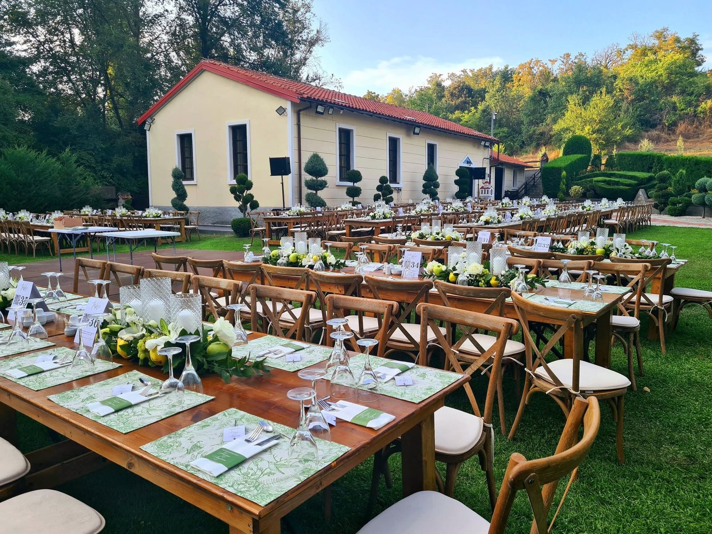
ΠΑΡΑΔΟΣΙΑΚΟΣ ΜΥΛΟΣ ΤΟΥ 1930 · ΑΜΠΕΛΟΚΗΠΟΙ ΚΑΣΤΟΡΙΑΣ
Ένας αναπαλαιωμένος μύλος του 1930 είναι έτοιμος να σας υποδεχθεί για γάμους, βαπτίσεις και κοινωνικές εκδηλώσεις που μοιάζουν με όνειρο.
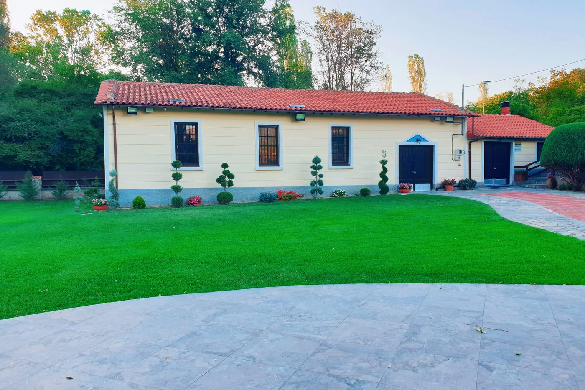
Η ΙΣΤΟΡΙΑ ΜΑΣ
Το 1925, με τα χρήματα που έστελνε από την Αμερική ο αδελφός του παππού, χτίστηκε ένας πέτρινος αλευρόμυλος δίπλα στο ποτάμι της λίμνης Ορεστιάδας. Από το 1930, με γερμανική μηχανή και γαλλικές πέτρες από πωρόλιθο, ο μύλος άλεθε σχεδόν τον μισό νομό Καστοριάς — από το Δισπηλιό και το Μαυροχώρι μέχρι το Κωσταράζι — και έδινε ψωμί σε ολόκληρη την περιοχή. Τρεις γενιές μυλωνάδων μεγάλωσαν μαζί με τις πέτρες του.
Τη δεκαετία του '40 τον γλίτωσαν από τις φλόγες οι ίδιοι οι Γερμανοί, που χαιρέτισαν τη δική τους μηχανή και έφυγαν. Το 1975 οι πέτρες σίγησαν, αλλά ο Βασίλης Γεωργιάδης δεν άφησε το κτίσμα να καταρρεύσει: το αναστήλωσε κατά γράμμα, όπως ήταν το 1930. Σήμερα ο μύλος διατηρείται μουσειακός και λειτουργικός — και τα παιδιά του, Παντελής και Νίκος, τον έχουν κάνει χώρο γιορτής: γάμους, βαπτίσεις και κοινωνικές εκδηλώσεις σε πέτρα, ξύλο και φως.
Ο ΧΩΡΟΣ

Η καρδιά του χώρου: αληθινή πέτρα, παλιός ξύλινος σκελετός και θερμός φωτισμός. Μαγική ατμόσφαιρα για το γιορτινό τραπέζι — και εσωτερικός χώρος που έχει μείνει αναλλοίωτος στον χρόνο.
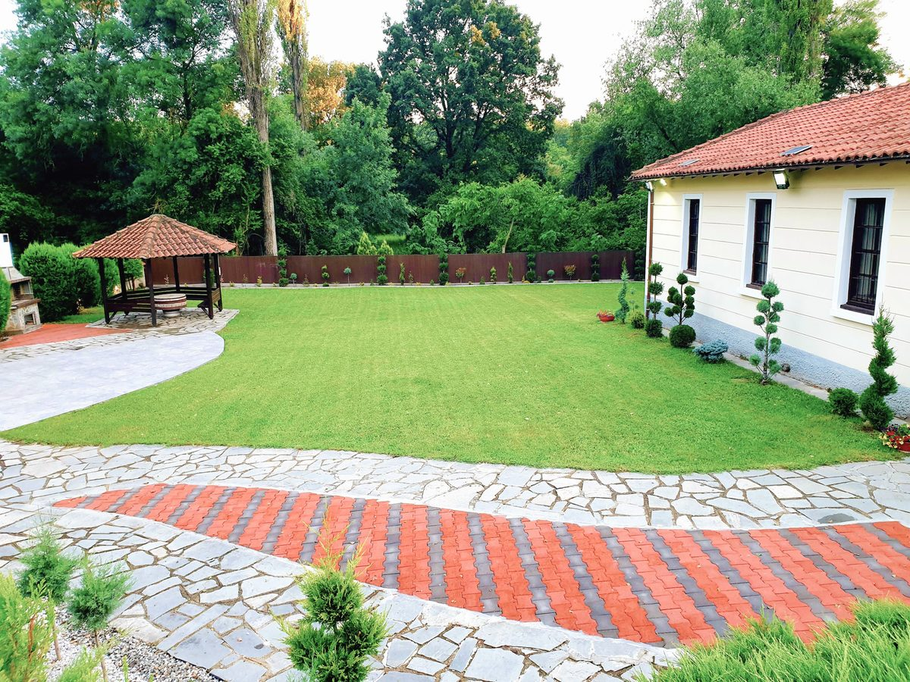
Εκδηλώσεις γύρω από μαγευτικά δέντρα και χορός κάτω από χιλιάδες ζεστά φωτάκια. Το ειδυλλιακό φυσικό τοπίο γίνεται το σκηνικό της βραδιάς σας.
ΤΙ ΓΙΟΡΤΑΖΟΥΜΕ
Όρκοι στο πράσινο, ποτήρια που σηκώνονται με θέα τον ήλιο που δύει και πάρτι που δεν τελειώνουν. Διαμορφώνουμε κάθε λεπτό του γάμου σας στα μέτρα σας.
Ρωτήστε μας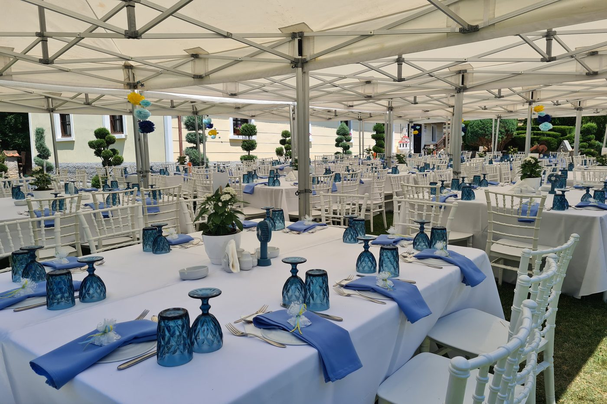
Η πιο γλυκιά μέρα της οικογένειας, σε ένα ήρεμο, φωτεινό τοπίο. Τρυφερή διακόσμηση και χώρος που αγκαλιάζει τους καλεσμένους σας.
Ρωτήστε μας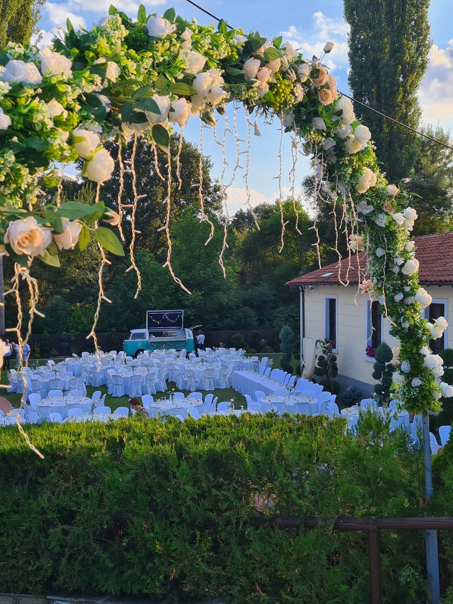
Κοινωνικές εκδηλώσεις με ιδιαίτερες απαιτήσεις και ύφος — κόντρα στα συνηθισμένα.
Ρωτήστε μαςΓΙΑΤΙ ΕΔΩ
Καταπράσινο, ειδυλλιακό περιβάλλον μέσα σε δέντρα — ένα τοπίο που ταξιδεύει τους καλεσμένους σας.
Αυθεντική αισθητική που γεννιέται από τον ίδιο τον μύλο: πέτρα, ξύλο και γήινα χρώματα.
Συνεργαζόμαστε μόνο με καταξιωμένους παρόχους εστίασης — εσείς διαλέγετε το μενού, εμείς υλοποιούμε την ιδέα σας.
Σε απόσταση αναπνοής από την Εγνατία Οδό και ελάχιστα λεπτά από την Καστοριά.
Ασφαλείς εξωτερικοί και καλυμμένοι χώροι, ώστε η γιορτή να συνεχίζεται ανεξάρτητα από τον καιρό.
Διαμόρφωση, διάθεση χώρων και συντονισμός ανάλογα με το όραμά σας — κάθε γιορτή είναι μοναδική.
ΓΚΑΛΕΡΙ
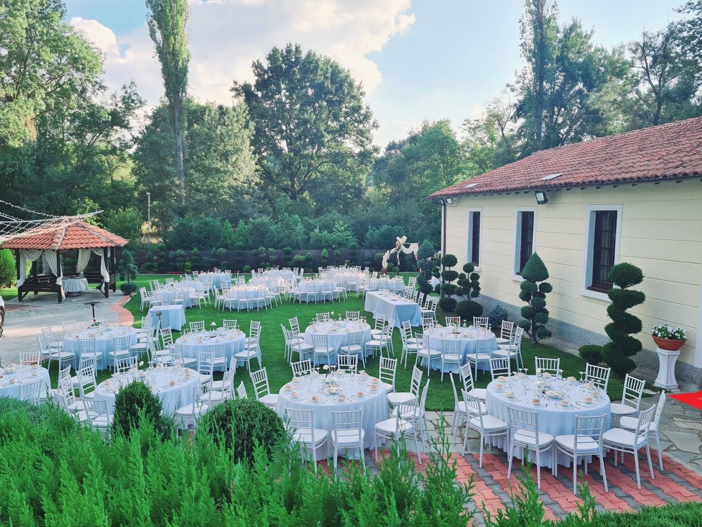
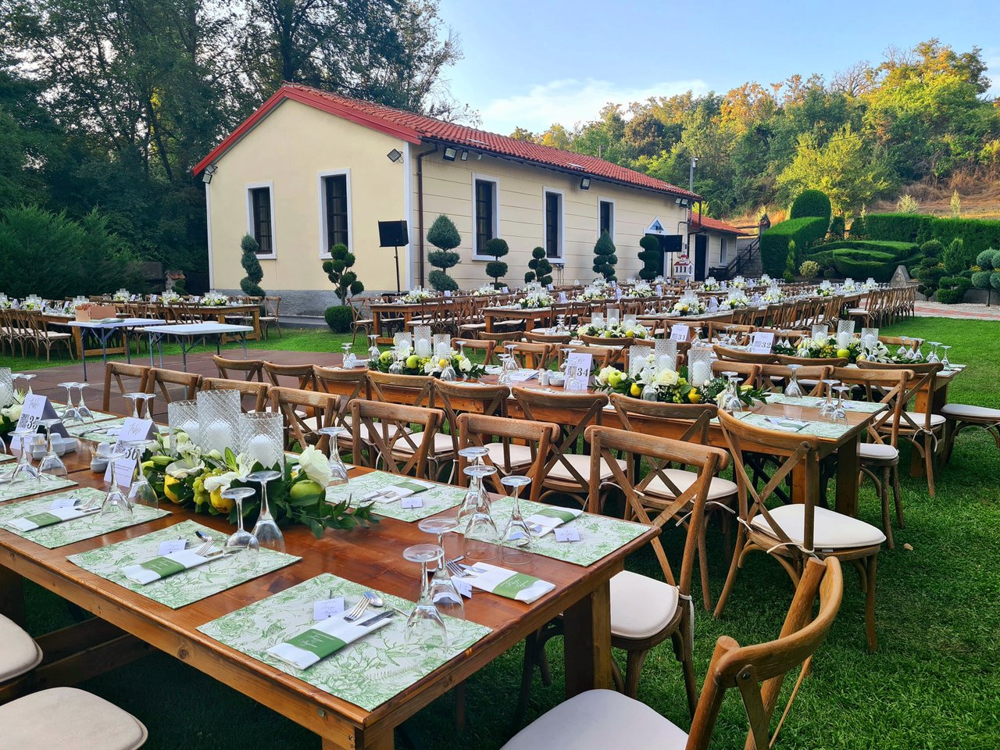
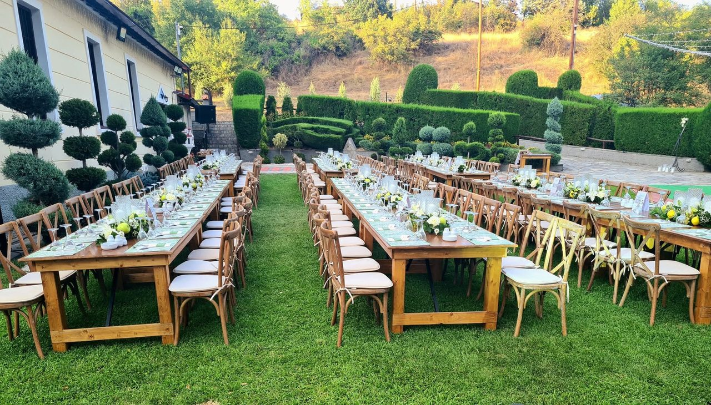
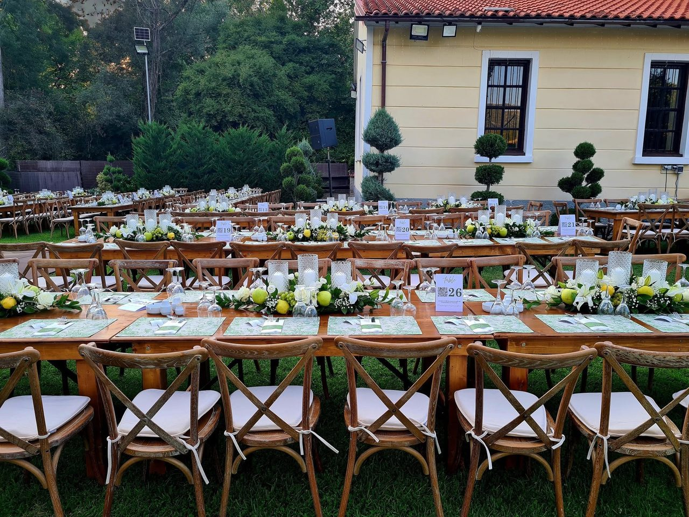
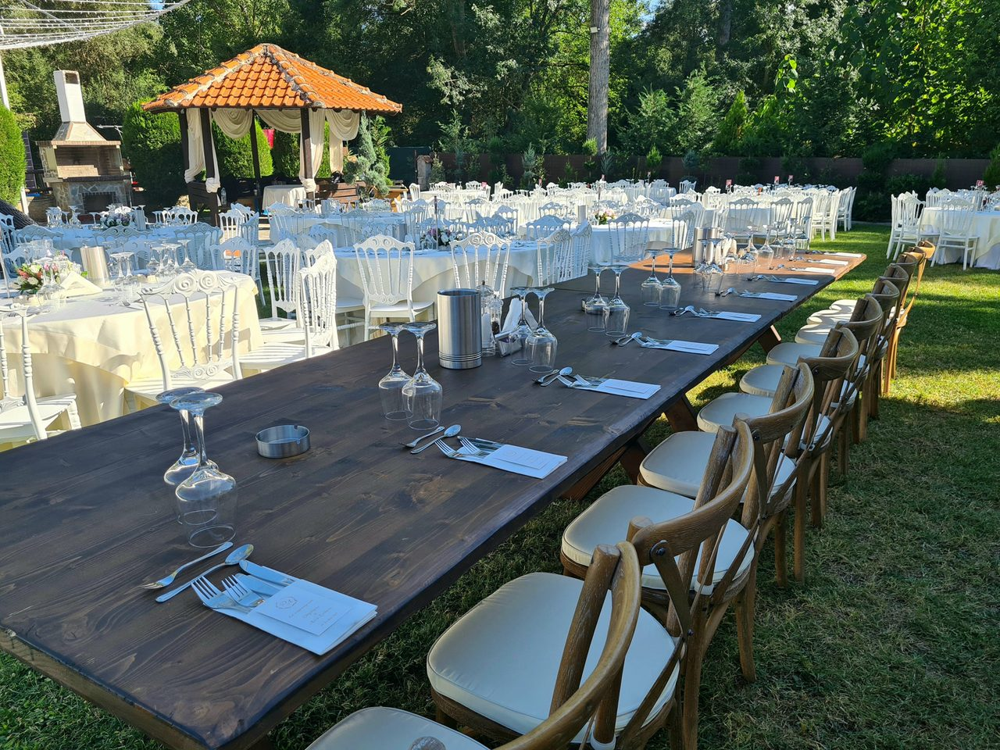
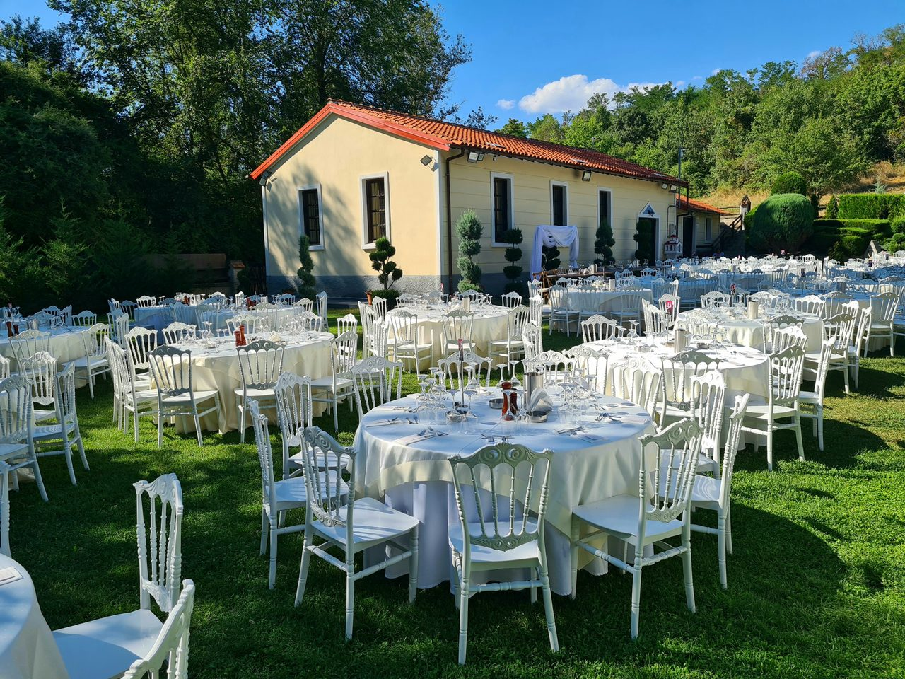
ΕΠΙΚΟΙΝΩΝΙΑ